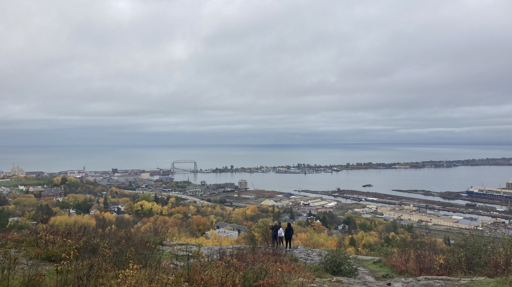

Why I Chose UMD and Duluth
Why I Chose UMD

There are a few key reasons why I decided to attend college at the University of Minnesota Duluth. One key reason why I chose UMD is the fact that my brother also attended UMD, so I learned a great deal about UMD from him. I have been in Duluth and on campus several times during high school while my brother studied at UMD. I also chose UMD because of the good things I heard about the Labovitz School of Business & Economics, much of which my brother told me about. Another reason I chose UMD was the Duluth area in general. I have always been fascinated by the beauty of Duluth and the North Shore, which I will talk more about in the following section. To this point, UMD and LSBE have been great for me so far, and I have met many friends and great professors in my time here so far.
What I Like About the Duluth Area
There are many different aspects that I am fascinated with about Duluth and the North Shore, particularly the beautiful and breathtaking views of the area. In my prior vacations and trips up to Duluth, I have always found the view of Lake Superior and Duluth as a whole very beautiful. In my experience, the view of Duluth from atop Enger Tower is one of the greatest highlights of Duluth, as Lake Superior and the Lift Bridge make for a great sight. Being able to see Lake Superior and the breathtaking views everyday is one thing I love about Duluth. Additionally, the numerous sights along the North Shore, including Gooseberry Falls, Split Rock Lighthouse, numerous other lighthouses, Grand Marais, and Grand Portage, are fascinating experiences for me. Every fall since 2023, I have taken trips up the North Shore as the colors of the leaves changed, and it is beautiful to see every time. The breathtaking views and landmarks to see are key things I love about Duluth and the North Shore.
Experience UMD
Enjoy this Pictory AI video, created with my teammates, showcasing Duluth.